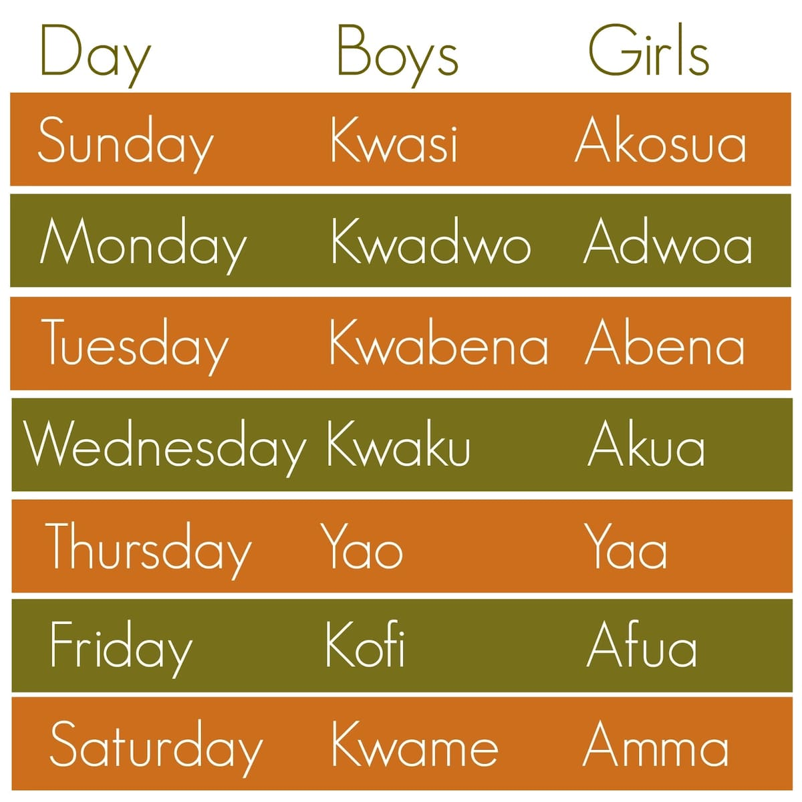
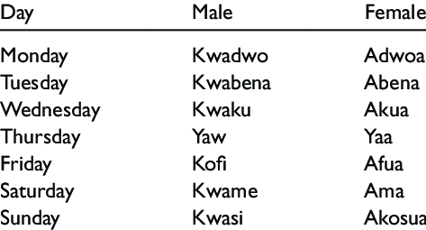

Akan names come from a traditional naming system for people from countries such as Togo, Ivory Coast and Ghana.
A child’s name is determined by factors surrounding his or her birth. For example, the day of their birth or the manner in which they were born may determine which name they get irrespective of their gender.
These Akan names signify the day one is born. According to Akan tradition, each child is born with a name associated to their soul.
The day the child is born is therefore determined by the soul.
The well thought and organized naming system of the Akan’s was initiated by the ancestors and has attracted so many people’s attention as they desire to know more about these names.
As a matter of fact, it is possible to tell what led to someone’s birth,
the day they were born and their rank among the siblings just by their names.


